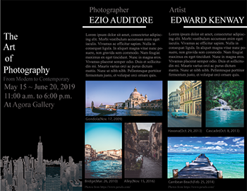
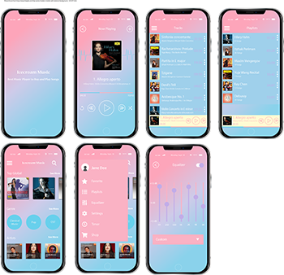
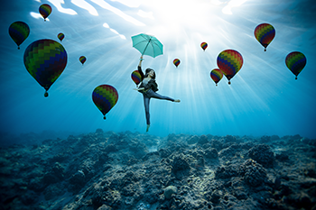
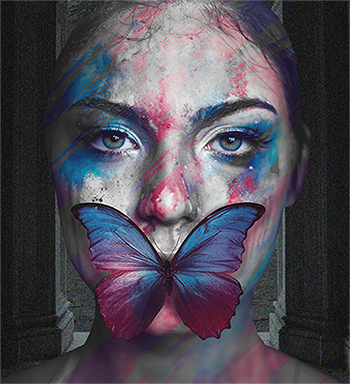
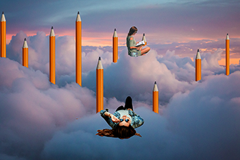
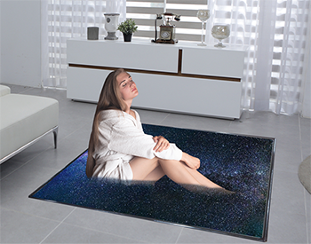
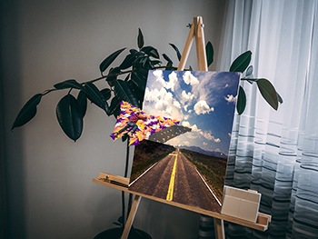
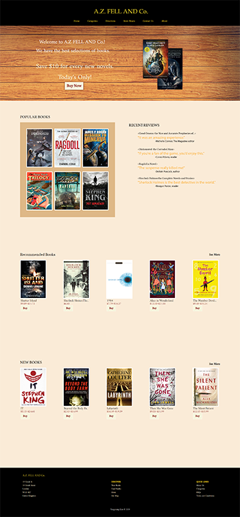
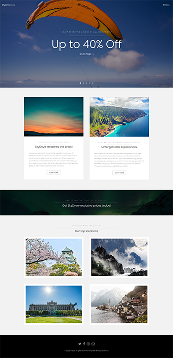
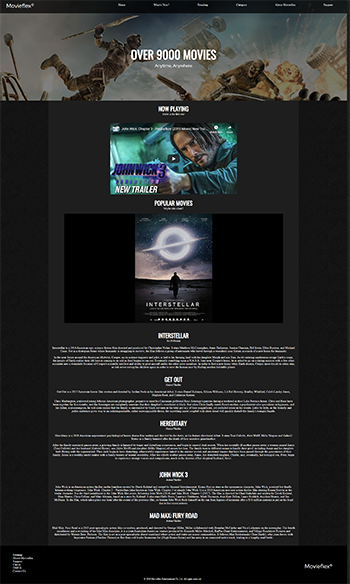

1. "Photo Gallery Pamphlet"
I made a pamphlet for a photo gallery with Adobe Illustrator CS6. Agora Gallery actually exists: Agora Gallery
Completed on June 4th, 2019.
★Fonts: 'Times New Roman' for the front, 'Myriad Pro' for the back.
★Images: from Pexels.com
2. UI Design
This was my first UI design work. I made it with Adobe Illustrator CS6. The names of the pieces and the album photos are from Amazon. Completed on July 3th, 2019.
★Fonts: 'Nueva Std' for the main screen with the title, 'Myriad Pro' for the rest.
★Mockup: from Freepik.com
3. "Underwater Fantasy"
This was my first Photoshop work. I cut photos, copy & pasted them, and used multiply blend mode. I wanted to make a photo with a mystic atmosphere. After I made Underwater Fantasy, I started to make surreal arts using Photoshop. Completed on August 14th, 2019.
★Images: from Pexels.com
4. "Artistic Woman"
I cut the woman's face and combined it with a background. Then I made the background black & white, used noise filter on the background, I duplicated the woman, made it black & white, moved it backward, and erased the front layer. Completed on August 19th, 2019.
★Images: from Pexels.com
5. "People In Clouds"
I cut photos of a lying woman, a woman reading a book, and an Amazon pencil. Then I put them around, I cut clouds, made copies of them, put them front, put pencils behind them and autotoned the photo to look more natural. Completed on August 20th, 2019.
★Images: from Pexels.com and Amazon.com
6. "Bathing In Mirror"
I cut photos of a woman in sauna, space, and my mirror. Then I skewed the mirror to fit the background, skewed space photo, duplicated the woman, erased the bottom to look more natural. Completed on August 21th, 2019.
★Images: from Pexels.com and Freepik.com
7. "Origami In Painting"
This was the hardest Photoshop work. I cut a photo of a man climbing and paper butterflies. Then I made copies of paper butterflies to make one big butterfly. I put them together, duplicated them, and dropped shadows behind them. Lastly, I put a photo of asphalt on an empty canvas, applied fresco filter on it to look like a painting, and autotoned the photo. Completed on August 27th, 2019.
★Images: from Pexels.com and Freepik.com
1. About Bookstore
The bookstore website I made is called 'A.Z and Co.' because I was watching Good Omens at that time. 'A.Z.Fell and Co.' is the name of the bookstore from Good Omens, an Amazon Prime TV series. We can see the Good Omens' novel at the front of my bookstore website. This website was made before I had knowledge of Responsive Web Design. I worked from July 9th, 2019 to July 17th, 2019.
2. About SkyDyve
This is a website for a travel agency. I used a template from http://templated.co to show that I could use a template. I worked from July 23th, 2019 to July 26th, 2019.
3. About Movieflex
This is my first work of responsive web design. I wanted to make a website for movie streaming companies. I used the images of the movies I enjoyed watching. This website contains three major elements: Responsive design for various devices, Embeded Youtube video, and an animated photo slider. I worked from September 6th, 2019 to September 10th, 2019.
★Images: Background image is made from Background Image Generator.
Movie posters and header image are from searching on Google.
★Photo Slider: From CSS Slider
★JavaScript and Jquery Codes: From searching on Google about responsive Youtube video and responsive web design.